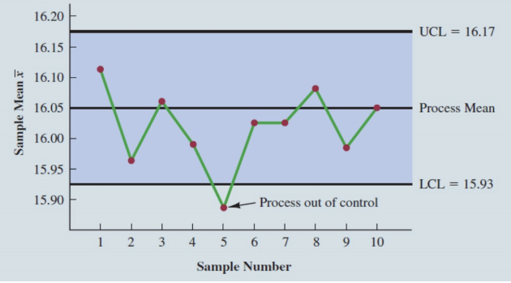
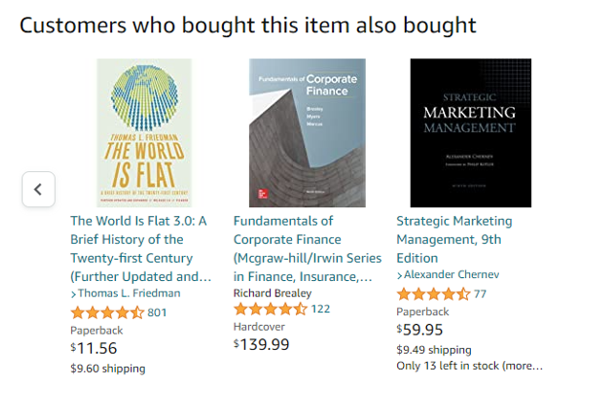
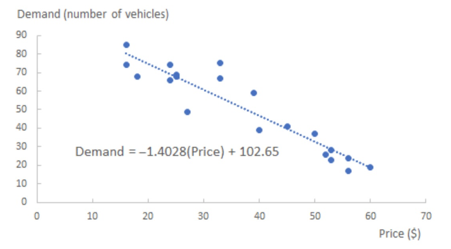

Tutorial 2 - Business Analytics & Database Management System
Question 1 (Camm et al. (2024), Chap 1 - Q6)
A control chart is a graphical tool to help determine if a process is in control or out of control. The following figure shows a control chart for a production line that fills boxes of cereal. Based on past data, we can calculate the mean weight of a box of cereal when the process is in control. The mean weight is 16.05 ounces. We can also calculate control limits, an upper control limit (UCL) and a lower control limit (LCL). New samples are collected over time and the data indicates that the process is in control so long as the new sample weights are between UCL and LCL. As shown in the chart, only sample 5 is outside of the control limits.
a. Is the control chart an example of descriptive, predictive, or prescriptive analytics?
b. Suppose the control cart is part of a data dashboard and the chart is combined with a rule that does the following. If four consecutive sample mean weights are outside of the control limits, the production line is automatically stopped, and a message appears on the dashboard. The message says “The production line is stopped. The process may be out of control. Please inspect the fill machine.” Is this new enhanced control chart combined with a rule an example of descriptive, predictive, or prescriptive analytics?
Question 2 (Camm et al. (2024), Chap 1- Q7)
An example of a response from Amazon when this Camm et al. (2024) you are reading was chosen online, is given below. It indicates that some people who purchased this text also tended to purchase The World Is Flat, Fundamentals of Corporate Finance, and Strategic Marketing Management. In this application of analytics, is Amazon using descriptive, predictive, or prescriptive analytics? Explain.
Question 3 (Camm et al. (2024), Chap 1 - Q8)
Human Resource (HR) Analytics or People analytics are terms used for the use of analytics to manage a company’s workforce. Google, Microsoft, and Walmart, for example, use people analytics to help retain their best people, ensure a diverse workforce, and better understand the strengths and areas needing improvement.
a. One application of people analytics is to build a model that estimates the probability of an employee departing the company within the next six months. Inputs to the model could be market demand for the skills the person possesses, how long the person has been with the company, and a major life event recently occurring for the person (for example, divorce). Is this type of model descriptive, predictive, or prescriptive? Explain.
b. How could you use the model described in part (a) to help improve the workforce?
Question 4 (Camm et al. (2024), Chap 1 - Q9)
A supermarket has been experiencing long lines during peak periods of the day. The problem is noticeably worse on certain days of the week, and the peak periods are sometimes different according to the day of the week. There are usually enough workers on the job to open all checkout lanes. The problem is knowing when to call some of the workers stocking shelves up to the front of the store to work the checkout lanes.
a. How could analytics be used to help the supermarket?
b. What data would be needed?
Question 5 (Camm et al. (2024), Chap 1 - Q10)
Setting the right price for a product is an important business decision. Price the product too high and demand could be too low. Set the price too low, demand may be high, but we are potentially leaving money on the table because the revenue per unit is low. Pricing analytics involves finding the right trade-off between the price charged and demand so as to maximize revenue. Suppose we need to set the price for renting a subcompact automobile for one day. Let us outline the decision process:
- Identify and define the problem. We need to set a price per day for a midsize rental car.
- Determine the criteria that will be used to evaluate alternative solutions. Our goal in setting the price is to maximize revenue.
- Determine the set of alternative solutions. Based on historical data and the competition, we will consider a broad price range from $10 per day to $60 per day.
- Evaluate the alternatives. We will evaluate proposed prices based on the expected revenue per day.
- Choose an alternative. We will choose the price that maximizes expected revenue.
We can use data and analytics to complete steps 4 and 5 of the decision process.
a. Based on historical or test market data, we can estimate a model that gives expected revenue as a function of price, as shown below. The dots represent the data (price and demand combinations) and the estimated model is the line in the chart: Demand = –1.4028 (Price) + 102.65. For example, for the price of $35 Demand = –1.4028(35) + 102.65 = 53.552 vehicles. So, we estimate that at a price of $35 per day, the demand will be about 54 vehicles. Is this estimated equation, a descriptive, predictive, or prescriptive model? Explain.
Our goal (step 5) is to find the price that maximizes expected revenue. Revenue = demand x price which is (–1.4028(Price) + 102.65) x (Price) = –1.40228(Price)2 + 102.65(Price). The revenue as a function of price is shown below for $10 increments of price.
b. What is the price that maximizes revenue?
c. Is step 5, visually expecting the revenue function to find a revenue-maximizing price, descriptive, predictive, or prescriptive analytics? Explain.
Question 6
You are managing a small bookstore’s database. The database has the following tables:
Books
BookID (Primary Key)
Title
Author
Price
Customers
CustomerID (Primary Key)
Name
Email
Orders
OrderID (Primary Key)
CustomerID (Foreign Key)
OrderDate
OrderDetails
OrderDetailID (Primary Key)
OrderID (Foreign Key)
BookID (Foreign Key)
Quantity
a. Explain why a Database Management System (DBMS) is important for managing data in an organization. List at least three key benefits of using a DBMS compared to traditional file-based systems.
b. Explain what a primary key is and why it is important.
c. What is the purpose of a foreign key in a database?
Reference
Business Analytics by Camm, Cochran, Fry, Ohlmann, Anderson & Sweeney, 2024, 5th Edition.